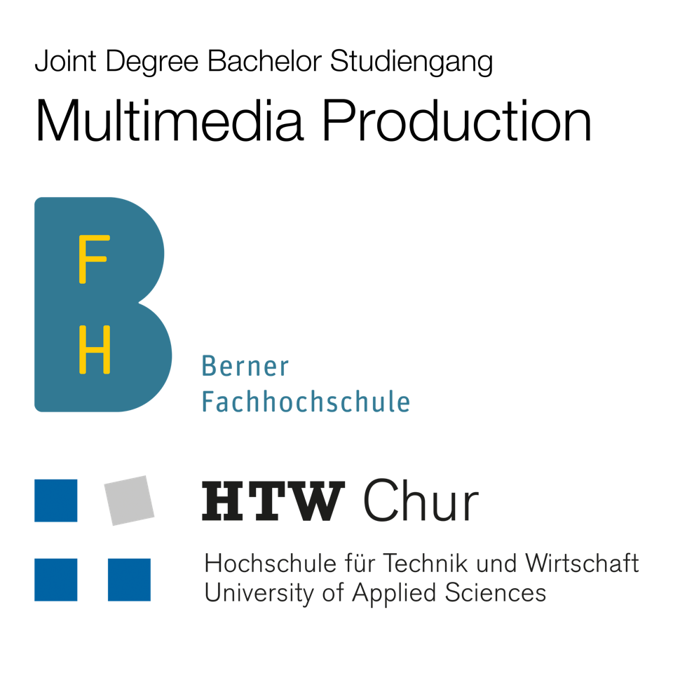

MENÜ
IMPRESSUM
Cindy Kipfer-Zumtaugwald
3930 Visp/Wallis
cindy_zumtaugwald@hotmail.com
Bachelorstudiengang Multimedia Production/Media Engineering
HTW – Hochschule für Technik und Wirtschaft Chur
BFH – Berner Fachhochschule
IMP – Institut für Multimedia Production
